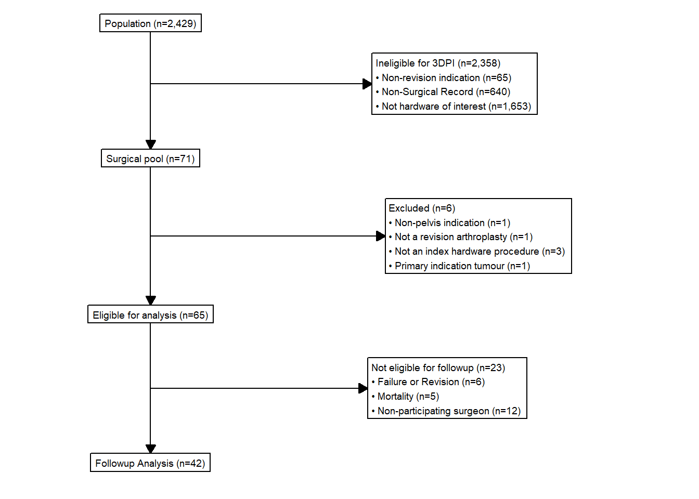
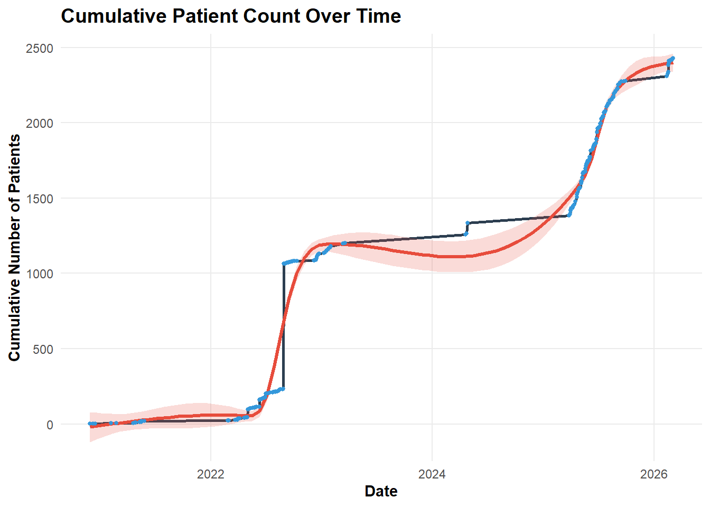
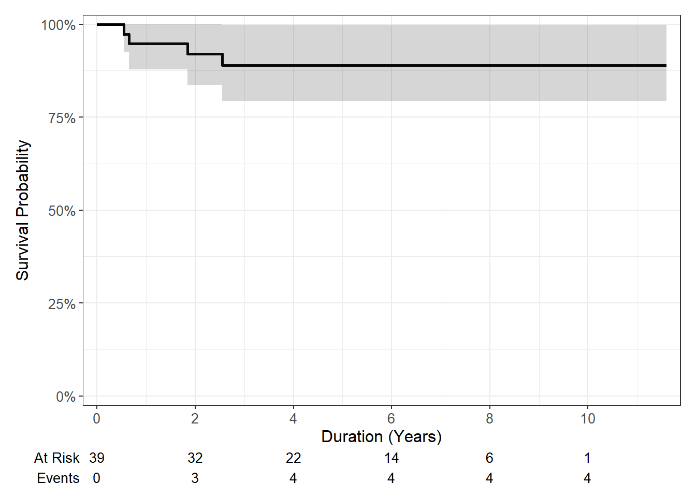
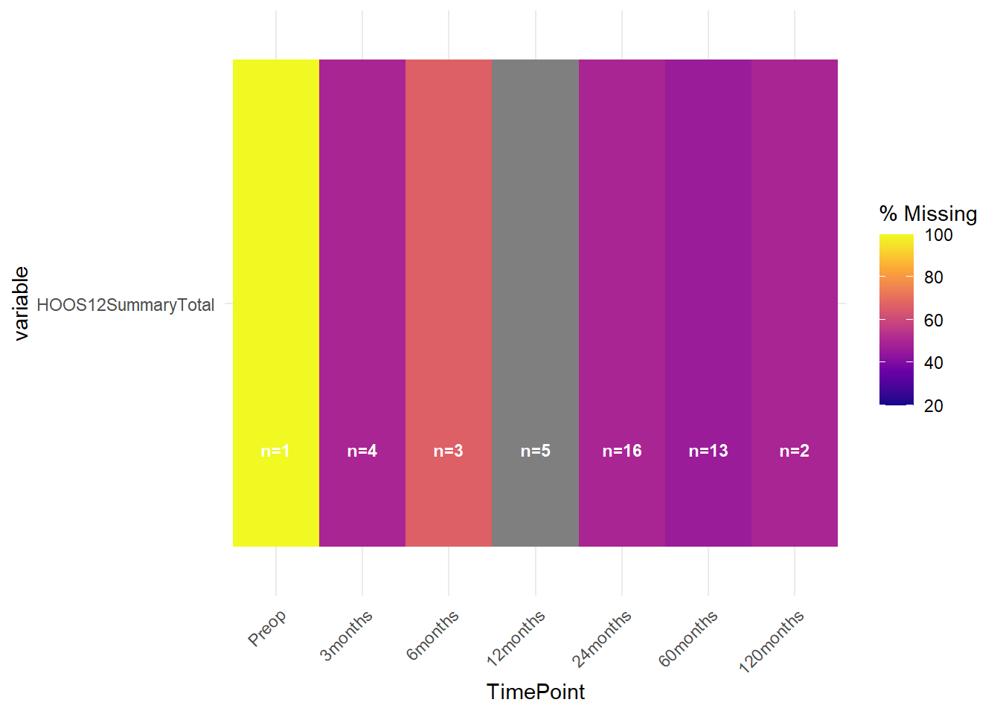

Rows: 3,420
Columns: 4
$ `POA 2021 Code` <dbl> 800, 810, 812, 820, 822, 822, 822, 8…
$ `POA 2021 Area (km2)` <dbl> 3.1731, 24.4283, 35.8899, 39.0642, 1…
$ `MMM 2023` <dbl> 2, 2, 2, 2, 2, 5, 6, 7, 2, 2, 2, 5, …
$ `MMM 2023 Area in POA 2021 (km2)` <dbl> 3.173800e+00, 2.442859e+01, 3.588975…COMPRESSOR_Revision3DPI
1 Preamble
The following analysis is a report on the activity, quality and data contained in the COMPRESSOR registry, which is described in the registry wiki.
Analysis packages were loaded initially into the R environment.
Access to the COMPRESSOR datasets was pre-authorised.
A function was generated to retrieve files using the googledrive package, to call on later in the analysis for processing data imports.
Data was retrieved from live database tables. Source files were specified and stored as global variables to call on in further functions.
A static registry snapshot was retrieved and formatted based on the fixed date of preparation of the snapshot (10-Mar-2026).
1.1 Retrieve MMM
2 Context
COMPRESSOR (Complex Reconstructive Surgery Outcomes Registry) is a clinical quality registry supporting the practices of one surgeon in Sydney, New South Wales. It has been in operation over two distinct periods, with upper and lower limb tumour cohorts, as well as tumour of the pelvis and reintervention arthroplasty cohorts of the hip and knee. The periods that the registry has been actively collecting PROMs;
25-Feb-2022 to 29-Sep-2022
27-Mar-2025 to present
It should be noted that collection of PROMs has been heavily restricted for this registry due to concerns over appropriateness to follow up patients at high-risk of mortality or other contraindications for completing scores. These restrictions have only recently been lifted, and only then for cases receiving hardware components of interest (Ossis, Stryker GMRS-MRH).
3 Recruitment Flow
Flowcharts as per STROBE (Vandenbroucke et al. 2007) and RECORD (Benchimol et al. 2015) guidelines were generated for treatments enrolled into the Registry. Followup was set to eligibility at any postoperative timepoint.

The flowcharts were separated into two components (Figure 1 and ?@fig-strobe-cohort2) and exclusions noted for patients that were labelled as a procedure failure.
Note
A procedure failure is defined by a terminology in the clinical letter and/or a revision case booked that affects the previously operated joint region. The general definition for arthroplasty cases as per the NJRR was used, whereby removal of any significant component of the existing prosthesis with replacement was deemed a failure of the preceding arthroplasty. In the case of infections treated with long-term antibiotics, where the preceding surgical procedure was intended to treat an existing infection, these cases were failed. In cases where DAIR with antibiotic therapy was used for non-septic revisions or primary cases in which an infection has been detected, these have been noted as complications without failing the preceding treatment.
Note
Treatment progression end is a term to denote that a treatment record is no longer being actively tracked by the registry team with respect to clinical outcomes or patient-reported outcomes. In this registry, the majority of cases are deceased, or are not contactable by the registry. A smaller number are stage 1 revisions that have transition to stage 2.
Cumulative recruitment over time was plotted from Registry inception to the present.

The non-linear recruitment progression illustrated in Figure 2 denotes the distinct periods of operation of COMPRESSOR, combined with periods of retrospective chart review of key patient subgroups. The recent increase in recruitment has been facilitated by some reorganisation of the cohort structure of the registry. This has had the side effect of increasing the PROMs eligible pool at the relevant time points.
4 Baseline and Demographics
| Characteristic | N = 641 |
|---|---|
| AgeAtTreatment | 68 (54, 75) |
| Sex | |
| F | 38 (59%) |
| M | 26 (41%) |
| Remoteness | |
| Metropolitan | 12 (46%) |
| Regional centre | 4 (15%) |
| Small rural town | 10 (38%) |
| TreatmentType | |
| Revision Else | 27 (42%) |
| Revision Own | 37 (58%) |
| TreatmentStatus | |
| Failed | 6 (9.4%) |
| No further followup | 32 (50%) |
| Ongoing | 26 (41%) |
| DateTreatment | 2013-08-01 - 2025-11-24 |
| 1 Median (Q1, Q3); n (%); Min - Max | |
5 Indications
| Indication | n | % of Total |
|---|---|---|
| Loose | 43 | 67.2 |
| BoneLoss | 24 | 37.5 |
| Dislocation | 8 | 12.5 |
| Infection | 7 | 10.9 |
| ECI | 5 | 7.8 |
| Hardware | 3 | 4.7 |
| Percentages calculated from total treatments. Multiple indications may apply per case. | ||
6 Complications
| Characteristic | N = 641 |
|---|---|
| ComplicationOccur2 | |
| No | 34 (53%) |
| Possible | 3 (4.7%) |
| Yes - Clinician Confirmed | 27 (42%) |
| OccurDelay2 | 175 (31, 469) |
| Followup2 | 1,747 (948, 2,619) |
| 1 n (%); Median (Q1, Q3) | |
| 2 Days | |
Adverse events were detected in 46.7% of the cohort as shown in Table 3, with an average detection with 30 days of surgery.
Write complications table for RB review
7 Index procedure survival

7.1 Henderson rating
Cases that were identified as meeting failure criteria in the registry were reviewed further and labelled according to Henderson criteria (Henderson et al. 2014).
There were 2 cases of dislocation (Henderson 1A) and a failure of an adjacent femoral replacement that could not be rated with the Henderson system in relation to the 3DPI component. There was one case of loosening at 6.6 years followup (Henderson 2B) and one at 6 months (Henderson 2A). One case of periprosthetic infection (Henderson 4A) presented at 10 months.
8 Patient reported outcomes

2 years
|
MSTS_24mth | EQ5D | ||||
|---|---|---|---|---|---|---|
| Pain | ADL | Quality | Total | |||
| n | 9 | 9 | 9 | 9 | 1 | 8 |
| p25 | 43.8 | 43.8 | 18.8 | 43.8 | 13.3 | 0.439 |
| p50 | 56.2 | 62.5 | 31.2 | 47.9 | 13.3 | 0.647 |
| p75 | 87.5 | 93.8 | 43.8 | 72.9 | 13.3 | 0.774 |
| EQ-5D-5L Responses at 24 Months | |||||
|---|---|---|---|---|---|
| Proportions calculated over non-missing responses per domain | |||||
Response Level
|
|||||
| No problems | Slight | Moderate | Severe | Unable | |
| Mobility | 12% | 25% | NA | 50% | 12% |
| Self-care | 50% | NA | 38% | 12% | NA |
| Activity | 25% | 12% | 50% | 12% | NA |
| Pain | 38% | 12% | 25% | 25% | NA |
| Anxiety | 50% | 25% | 25% | NA | NA |
References
Benchimol, Eric I., Liam Smeeth, Astrid Guttmann, Katie Harron, David Moher, Irene Petersen, Henrik T. Sørensen, Erik von Elm, and Sinéad M. Langan. 2015. “The REporting of Studies Conducted Using Observational Routinely-Collected Health Data (RECORD) Statement.” PLOS Medicine 12 (10): e1001885. https://doi.org/10.1371/journal.pmed.1001885.
Henderson, E. R., M. I. O’Connor, P. Ruggieri, R. Windhager, P. T. Funovics, C. L. Gibbons, W. Guo, F. J. Hornicek, H. T. Temple, and G. D. Letson. 2014. “Classification of Failure of Limb Salvage After Reconstructive Surgery for Bone Tumours.” The Bone & Joint Journal 96-B (11): 1436–40. https://doi.org/10.1302/0301-620x.96b11.34747.
Vandenbroucke, Jan P, Erik von Elm, Douglas G Altman, Peter C Gøtzsche, Cynthia D Mulrow, Stuart J Pocock, Charles Poole, James J Schlesselman, and Matthias Egger. 2007. “Strengthening the Reporting of Observational Studies in Epidemiology (STROBE): Explanation and Elaboration.” PLoS Medicine 4 (10): e297. https://doi.org/10.1371/journal.pmed.0040297.